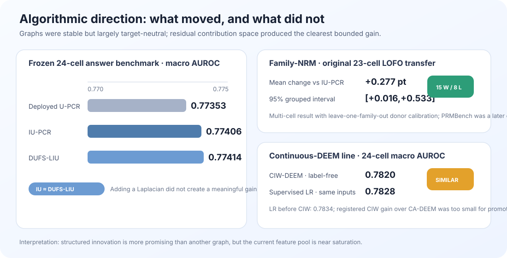
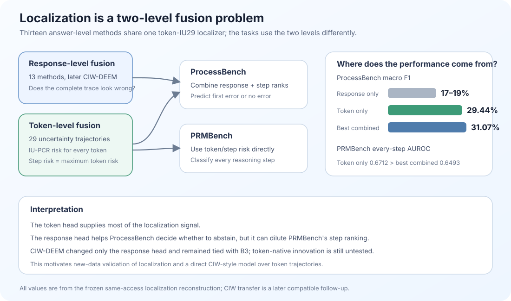
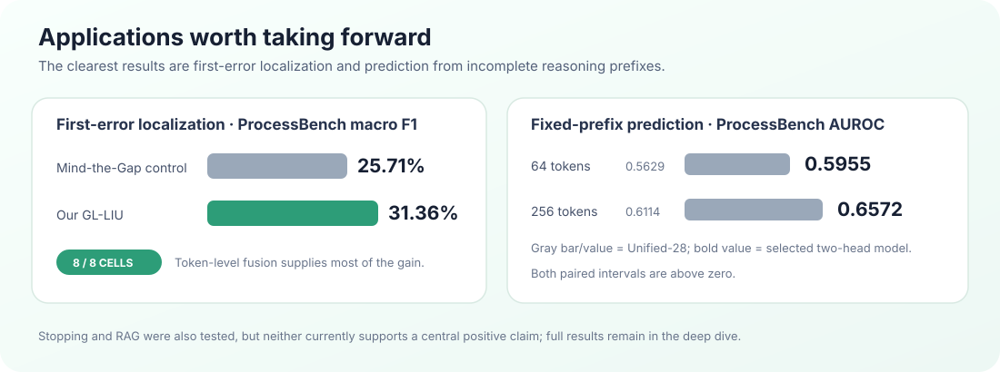

Algorithmic development and new applications
A medium-length letter with the main results in place, plus direct paths to the mathematical derivations, full experimental record and every supporting figure.
Hi Ofir, Bracha and Amir,
I wanted to share an update on what I have done in the past three weeks since our last meeting. The work converged around two connected directions:
- Algorithmic extensions of our unsupervised fusion method, U-PCR
- Application-oriented extensions beyond global final-answer hallucination detection
I also ran a smaller white-box study, summarized briefly near the end. I moved the equations, complete experimental record, confidence intervals and detailed plots into three linked deep dives.
1. Algorithmic extensions of U-PCR
The algorithmic direction grew directly from our discussion about using DUFS more naturally inside U-PCR. In the previous round, I tried DUFS, GroupFS and other selectors as a preprocessing step: they selected the features in advance and then ran L-SML or U-PCR as-is. This time, I replaced U-PCR's own internal keep decision with 111 variants inspired by those feature-selection algorithms. None improved AUROC or moved the selected subset closer to the best label-based subset.
I then did another literature review, focusing specifically on papers that continued the early U-PCR and unsupervised ensemble-regression work. Two became important:
- Crowdsourcing Regression: A Spectral Approach (AISTATS 2022) recovers an unknown continuous target from noisy regressors without labels. IU-PCR estimates the shared target direction from covariance under an independence assumption; SU-PCR separates the covariance into a low-rank shared component and sparse correlated regressor errors.
- Unsupervised Ensemble Learning Through Deep Energy-based Models (AISTATS 2026) replaces the linear covariance model with an energy-based model over the ensemble outputs and latent class, allowing nonlinear dependencies without labels. Its original categorical input required a new continuous adaptation for our measurements.
I started with IU-PCR and SU-PCR. SU-PCR's sparse-error correction was positive but inconclusive. IU-PCR performed well and gave us a cleaner baseline: it retains the stable measurements and estimates the score through a low-dimensional projected covariance solve.
I then integrated DUFS into this PCR fusion stage. In the earlier experiments DUFS selected features and fusion ran unchanged. In DUFS-LIU-PCR, no feature is simply selected or deleted. Continuous gates define a similarity graph between answers, and its Laplacian enters the final IU-PCR weight problem as a regularizer. Many variants found stable geometry, but it mainly followed shared confidence and response length rather than correctness. IU-PCR and DUFS-LIU-PCR were essentially tied on the aligned 24-cell benchmark.
The most useful change came from HARP. I reused its architectural idea of removing the dominant shared component and examining what remains, not its supervised white-box classifier. I grouped the 30 measurements into six families based on raw provenance: entropy level, entropy change, two energy families, top-probability shape and trace structure.
For each answer, the weighted measurements within a family form one partial score; the six partial scores add exactly to IU-PCR. I regressed each family contribution on the total score and retained its residual—how much more or less the family contributed than expected at the same overall confidence. Family-NRM finds a residual disagreement pattern that repeats across calibration environments and adds it as a small correction. Treating each atomic feature as its own residual direction was unstable and worse. With the six provenance families, PRMBench response AUROC improved from 0.7206 to 0.7252, approximately +0.46 percentage points, with a positive interval.
I then adapted DEEM to our setting. The published model receives categorical classifier predictions and uses a deeper energy architecture to capture nonlinear dependencies; the paper also demonstrates mixture-of-experts settings, where different predictors matter for different samples. Our measurements are continuous, so I built Continuous Additive DEEM (CA-DEEM)—called B3 only in the internal experiment registry. It processes each provenance family through a small nonlinear component and adds the family contributions into one label-free score.
Because this adapter removed parts of DEEM's categorical/iRBM architecture, I was concerned that it had also lost some adaptive expert behavior. I tried several output routers and several residual, graph and Laplacian corrections, but none improved reliably. Once again, stable dependence did not identify which measurement should be trusted for a particular answer.
I therefore redesigned the input. I returned to three token-level signals behind many of our original measurements—entropy, sampled-token surprisal and partition energy—and kept three familiar summaries of each: mean level, strongest sliding-window variance and strongest CUSUM change. This creates a 3-by-3 set of nine inputs whose rows share a source and whose columns share an operator.
For each input, cross-fitting predicts the part already explained by the other inputs that share its source or operator. The residual is its innovation: what that measurement contributes beyond the surrounding structure. CIW mixes the original measurement with this innovation, retains at least half of the original value and passes the transformed inputs to unchanged CA-DEEM. Neither stage uses correctness labels.
This produces CIW-DEEM—Cross-fitted Innovation-Weighted DEEM. It reaches 0.7820 cell-macro AUROC, the highest point estimate in this CA-DEEM input line, although its registered improvement over CA-DEEM is too small for promotion. Supervised group-held-out logistic regression on the same transformed inputs reaches 0.7828—essentially the same range—and is slightly worse than logistic regression before CIW at 0.7834. CIW therefore does not expose a large unused linear signal; its small benefit appears specific to the nonlinear CA-DEEM backend.
The unsuccessful variants remain in the deep dive; the main route is feature selection → IU/SU-PCR → DUFS-LIU-PCR → Family-NRM → CA-DEEM → CIW-DEEM.

2. Application-oriented extensions beyond final-answer detection
I tested first-error localization, fixed-prefix prediction, actual stopping and RAG hallucination detection. The first two produced the clearest results, so I focus on them here and leave the complete stopping and RAG analyses in the deep dive.
A. First-error localization — a consistent improvement over Mind the Gap
ProcessBench differs from final-answer detection: the system must identify the first erroneous reasoning step, or return no error. Our GL-LIU pipeline uses a global IU/DUFS-LIU head to detect an error and a local token-level head to locate it. We compare it with our reproduction of Mind the Gap under the same protocol.
More generally, I reconstructed all 13 answer-level fusion methods as alternative response heads and paired each with the same token head. The response head summarizes whether the complete trace looks unreliable. The token head fuses 29 uncertainty trajectories with IU-PCR, scores every token and assigns each reasoning step its maximum token risk. ProcessBench combines the response and step ranks before selecting a first error or no error; PRMBench labels every step and can use the token score directly.

| ProcessBench result across four datasets and two Qwen3 sizes | Reproduced Mind the Gap | Our GL-LIU | Change |
|---|---|---|---|
| Macro F1: correct first-error decision, including clean traces | 25.71% | 31.36% | +5.65 points |
| Exact first erroneous step, among erroneous traces | 17.84% | 21.79% | +3.95 points |
| Predicted within one step of the first error | 39.35% | 46.76% | +7.41 points |
GL-LIU wins all eight cells, and almost all our global-local variants beat Mind the Gap in aggregate. However, graph-based variants add only 0.33–0.58 F1 points over plain IU, with intervals crossing zero. The result supports the global-local design, not graph superiority.
| Same-access localization reconstruction | Response head only | Token head only | Best response + token |
|---|---|---|---|
| ProcessBench first-error macro F1 | 17.36%–19.20% | 29.44% | 31.07% |
| PRMBench every-step AUROC | at most 0.5739 | 0.6712 | 0.6493 |
Most localization ability comes from token-level fusion. The response head adds a smaller but useful ProcessBench improvement because that task also needs a clean-trace decision. On PRMBench, adding global response risk hurts step ranking.
Separate PRMBench experiment. PRMBench labels every step, not only the first error. The token-only trajectory-first IU-PCR reaches 0.6712 AUROC; supervised Qwen2.5-Math-PRM-7B reaches 0.7983 and remains a higher-access ceiling.
Later CIW-DEEM transfer. CIW replaced only the response head while token-IU29 remained fixed and was effectively tied with CA-DEEM. The useful follow-up is therefore a token-native innovation model, not another answer-head substitution.
B. Fixed-prefix prediction — a clear gain at both tested budgets
We can predict final-answer correctness meaningfully before the answer is complete, and the selected prefix model clearly improves over our earlier shared causal baseline.
That baseline, Unified-28, compresses seven token-level uncertainty streams into four causal summaries per stream—the current level, a short moving average, accumulated positive evidence and persistence—giving 28 features in total. One frozen IU-PCR weight vector produces a risk score at every prefix, using only information already available at that token.
The selected model uses a more task-specific two-head architecture. Its global head recomputes the answer-level IU uncertainty score using only the observed prefix; its local head follows the strongest token-level warning seen so far. After calibration, the two scores are combined with equal weight. This preserves both the overall state of the incomplete answer and a sharp local warning that might otherwise be averaged away. DeepConf motivated the confidence-under-compute question, although our single-trace method is an adaptation rather than a paper-exact reproduction.
On the aligned ProcessBench prefix benchmark, the two-head model reaches 0.5955 AUROC at 64 tokens versus 0.5629 for Unified-28, and 0.6572 at 256 tokens versus 0.6114; both paired intervals are above zero. This supports useful prediction from fixed saved prefixes, not yet adaptive stopping during live generation.
Other application experiments
I also tested actual online stopping and RAG hallucination detection, but neither is currently a central positive result. LEASH saved 38.8% of generated tokens while pass@1 fell by 18.3 percentage points. RAG evidence-contrast fusion transferred, but the result varied substantially with benchmark, prediction unit and context condition. The full protocols and numbers remain in the application deep dive.

3. Additional white-box exploration
Separately, inspired mainly by TriLens, I tested whether internal layer representations add information beyond our gray-box token statistics. Distributed-depth U-PCR reached about 0.785 macro AUROC and covered more answers, but on the exact matched subset it was effectively tied with gray-box DUFS-LIU: 0.7817 versus 0.7830. A post-hoc white+gray average reached 0.7902, suggesting complementarity, but it needs independent validation. I therefore see white-box as a secondary direction rather than the main story of this update.
My current conclusion is that we are approaching saturation in algorithmic development on the present feature pool. We now have methods that work well at several levels of complexity—from IU-PCR, through the bounded Family-NRM correction, to nonlinear CA-DEEM and CIW-DEEM—but the added complexity produces increasingly small gains. The clearer successes are now in first-error localization and fixed-prefix prediction.
I would therefore like to discuss whether the next step should be to consolidate and present these results rather than continue adding variants. I would like to begin writing a formal thesis or paper-style document that makes the story easier to evaluate and share, while deciding which of localization, early prediction and token-native innovation deserves one final prospective experiment.
Could we meet next week to go over the results and decide on the main thesis and paper story?
Thanks,
Omri
Papers used as inspiration or comparison
- Jaffe et al., Unsupervised Ensemble Learning with Dependent Classifiers (AISTATS 2016); Dror et al., Unsupervised Ensemble Regression; Tenzer et al., Crowdsourcing Regression: A Spectral Approach (AISTATS 2022).
- Ofir Lindenbaum, Uri Shaham, Jonathan Svirsky, Erez Peterfreund and Yuval Kluger, Differentiable Unsupervised Feature Selection based on a Gated Laplacian (NeurIPS 2021); HARP; and Maymon et al., Unsupervised Ensemble Learning Through Deep Energy-based Models (AISTATS 2026).
- TriLens; ProcessBench; Mind the Gap; PRMBench; The Lessons of Developing Process Reward Models in Mathematical Reasoning; Deep Think with Confidence; LEASH.
- RAGTruth (ACL 2024), GASP, LettuceDetect and RefChecker (EMNLP 2024).